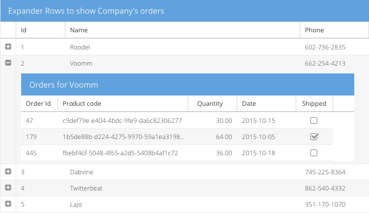

What's New
Many classes have shortcut names used when creating (instantiating) a class with a
configuration object. The shortcut name is referred to as an alias (or xtype if the
class extends Ext.Component). The alias/xtype is listed next to the class name of
applicable classes for quick reference.
Framework classes or their members may be specified as private or protected. Else,
the class / member is public. Public, protected, and private are access
descriptors used to convey how and when the class or class member should be used.
Public classes and class members are available for use by any other class or application code and may be relied upon as a stable and persistent within major product versions. Public classes and members may safely be extended via a subclass.
Protected class members are stable public members intended to be used by the
owning class or its subclasses. Protected members may safely be extended via a subclass.
Private classes and class members are used internally by the framework and are not intended to be used by application developers. Private classes and members may change or be omitted from the framework at any time without notice and should not be relied upon in application logic.
static label next to the
method name. *See Static below.Below is an example class member that we can disect to show the syntax of a class member (the lookupComponent method as viewed from the Ext.button.Button class in this case).
Let's look at each part of the member row:
lookupComponent in this example)( item ) in this example)Ext.Component in this case). This may be omitted for methods that do not
return anything other than undefined or may display as multiple possible values
separated by a forward slash / signifying that what is returned may depend on the
results of the method call (i.e. a method may return a Component if a get method calls is
successful or false if unsuccessful which would be displayed as
Ext.Component/Boolean).PROTECTED in
this example - see the Flags section below)Ext.container.Container in this example). The source
class will be displayed as a blue link if the member originates from the current class
and gray if it is inherited from an ancestor or mixed-in class.view source in the example)item : Object in the example).undefined a "Returns" section
will note the type of class or object returned and a description (Ext.Component in the
example)Available since 3.4.0 - not pictured in
the example) just after the member descriptionDefaults to: false)The API documentation uses a number of flags to further commnicate the class member's function and intent. The label may be represented by a text label, an abbreviation, or an icon.
classInstance.method1().method2().etc();false is returned from
an event handler- Indicates a framework class
- A singleton framework class. *See the singleton flag for more information
- A component-type framework class (any class within the Ext JS framework that extends Ext.Component)
- Indicates that the class, member, or guide is new in the currently viewed version
- Indicates a class member of type config
- Indicates a class member of type property
- Indicates a class member of type
method
- Indicates a class member of type event
- Indicates a class member of type
theme variable
- Indicates a class member of type
theme mixin
- Indicates that the class, member, or guide is new in the currently viewed version
Just below the class name on an API doc page is a row of buttons corresponding to the types of members owned by the current class. Each button shows a count of members by type (this count is updated as filters are applied). Clicking the button will navigate you to that member section. Hovering over the member-type button will reveal a popup menu of all members of that type for quick navigation.
Getting and setter methods that correlate to a class config option will show up in the methods section as well as in the configs section of both the API doc and the member-type menus just beneath the config they work with. The getter and setter method documentation will be found in the config row for easy reference.
Your page history is kept in localstorage and displayed (using the available real estate) just below the top title bar. By default, the only search results shown are the pages matching the product / version you're currently viewing. You can expand what is displayed by clicking on the button on the right-hand side of the history bar and choosing the "All" radio option. This will show all recent pages in the history bar for all products / versions.
Within the history config menu you will also see a listing of your recent page visits. The results are filtered by the "Current Product / Version" and "All" radio options. Clicking on the button will clear the history bar as well as the history kept in local storage.
If "All" is selected in the history config menu the checkbox option for "Show product details in the history bar" will be enabled. When checked, the product/version for each historic page will show alongside the page name in the history bar. Hovering the cursor over the page names in the history bar will also show the product/version as a tooltip.
Both API docs and guides can be searched for using the search field at the top of the page.
On API doc pages there is also a filter input field that filters the member rows using the filter string. In addition to filtering by string you can filter the class members by access level and inheritance. This is done using the checkboxes at the top of the page.
The checkbox at the bottom of the API class navigation tree filters the class list to include or exclude private classes.
Clicking on an empty search field will show your last 10 searches for quick navigation.
Each API doc page (with the exception of Javascript primitives pages) has a menu view of metadata relating to that class. This metadata view will have one or more of the following:
Ext.button.Button class has an alternate class name of Ext.Button). Alternate class
names are commonly maintained for backward compatibility.Runnable examples (Fiddles) are expanded on a page by default. You can collapse and expand example code blocks individually using the arrow on the top-left of the code block. You can also toggle the collapse state of all examples using the toggle button on the top-right of the page. The toggle-all state will be remembered between page loads.
Class members are collapsed on a page by default. You can expand and collapse members using the arrow icon on the left of the member row or globally using the expand / collapse all toggle button top-right.
Viewing the docs on narrower screens or browsers will result in a view optimized for a smaller form factor. The primary differences between the desktop and "mobile" view are:
The class source can be viewed by clicking on the class name at the top of an API doc page. The source for class members can be viewed by clicking on the "view source" link on the right-hand side of the member row.

Ext JS 6.2 introduces several new components and provides numerous enhancements across the framework from MVC improvements to new mobile device themes, in addition to new tooling features that leverage cutting edge browser capabilities. This article will introduce all of these exciting features and show you how to start taking advantage of them right away!
The architecture of Ext JS 6 allows code to be written once and then used on any device. This multi-device architecture enables the new Calendar components and D3 Adapter to be used in either the Classic or Modern Toolkit and therefore on any screen.
The calendar package provides all the building blocks you need to include advanced calendaring in your application. The presentation layer of the calendar package consists of several, low-level calendar view components and a high-level, integrated container to manage them.
There are two fundamental types of low-level views provided in the calendar package: days and weeks. The days view displays one or more days side-by-side and positions each day's events vertically by their start times. The weeks view displays one or more weeks arranged vertically. The events are simply rendered in a list sorted by their start times positioned at the top of each day. Both views also deal with whole day events in their respective layouts.
These base views are then configured and specialized to produce day, week and month views. Finally, the calendar panel integrates these views with a shared events store and adds navigation and view switching capabilities.
The abstractions used by the calendar data model allow the application to decide what fields are needed to define events and calendars. In other words, there are no required fields on an event record. Instead there are a small number of required methods. Of course, there is a default implementation that chooses a particular set of fields to represent an event. To bring all the pieces together, the new Calendar example application shows how to connect the calendar component to Google's Calendar API.
Presenting data in a clear and compelling way is an important job for any application. When it comes to the realm of data visualization, D3 is an extremely popular choice and now with the new d3 package, it is simpler than ever to integrate D3 into your Ext JS application.
Integrating D3 begins with the choice of rendering technology: SVG or Canvas. This is because D3 is not a drawing abstraction library (like Ext.draw.*) and so the nature of the drawing surface is an important starting point. These base classes provide a structure to assist with rendering to the correct container element and updating when the container resizes.
These base classes streamline the process of copying simple, whole page examples (such as those in the D3 Gallery) and housing them in a component. That component can then be easily managed like any other in an Ext JS application.
The D3 Adapter then builds on these primitive base classes and provides some of the most commonly used D3 visualizations as ready to use components. These higher-level components understand your Ext JS data stores and connect them to D3 drawings and then ensure these stay up to date when your data changes.
The need to display hierarchical information is quite common and D3 provides a wide range of visualizations for this type of data. These components connect an Ext.data.TreeStore to several of the popular D3 layouts to display hierarchical data.
Perhaps the most popular choice for displaying simple hierarchies is the tree layout. Similar to a standard Ext JS Tree this visualization renders parent and child nodes and allows the user to expand and collapse them.
There are three other pre-packaged components that can display a hierarchy of data. These are the TreeMap, Pack and Sunburst.
All of these components operate on a TreeStore and provide a mapping between Ext JS conventions and the underlying D3 rendering engine.
A great way to present three-dimensional data in a two-dimensional drawing is a heat map. The HeatMap component maps X and Y values to axes as you might expect and then maps Z values to a "color axis".
This component uses a standard Ext.data.Store and maps fields of your choice as X, Y and color axis values.
The Ext JS D3 Adapter provides a flexible PanZoom interaction class that enables mouse and touch manipulation of D3 components. The PanZoom class gives your users an intuitive experience for zooming into drawings to see details on any type of device. It also gives developers the ability to constrain and tune these interactions by gesture and device type.
We can also aggregate local data using a Pivot Matrix. The new "pivot-d3" package contains several useful components that connect these pieces for you.
This component produces a D3 HeatMap after the data is aggregated by the pivot matrix.
{
xtype: 'pivotheatmap',
// pivot matrix configurations
matrix: {
store: {
type: 'salesperemployee'
},
leftAxis: {
dataIndex: 'employee',
header: 'Employee',
sortable: false
},
topAxis: {
dataIndex: 'day',
sortIndex: 'dayNumber',
header: 'Day'
},
aggregate: {
dataIndex: 'sales',
aggregator: 'sum'
}
}
}
When the pivot matrix is configured there should be only one dimension per axis defined.
This component produces a D3 TreeMap after the data is aggregated by the pivot matrix.
{
xtype: 'pivottreemap',
// pivot matrix configurations
matrix: {
store: {
type: 'salesperemployee'
},
leftAxis: {
dataIndex: 'employee',
header: 'Employee',
sortable: false
},
aggregate: {
dataIndex: 'sales',
aggregator: 'sum'
}
}
}
The topAxis configuration of the pivot matrix is ignored, leftAxis supports multiple dimensions and aggregate
should have only one dimension.
This new component connects the pivot Configurator plugin with any of the the above components to allow the end-user to configure the pivot matrix:
The Configurator can be configured using the "configurator" config:
{
xtype: 'pivotd3container',
drawing: {
xtype: 'something' // one of the above pivot D3 components
// more configs specific to that component
},
configurator: {
// pivotconfigurator plugin configs
fields: [{
dataIndex: 'person',
header: 'Person',
settings: {
// field settings
}
},{
// more fields
}]
},
// following configs are similar to the pivot grid
matrix: {
leftAxis: [],
topAxis: [],
aggregate: []
}
}
In Ext JS 6.2, as in most releases, the grid component in both modern and Classic Toolkits have gained some exciting new functionality.
The classic grid has long had the ability to expand and collapse individual rows to reveal a row body area. A separate row expander plugin managed a column of "expanders" (a "+" or "-" glyph) that toggled the visibility of a row's body. These features are now available in the Modern Toolkit grid as well.
Both toolkits now also have the ability to define components in the row body, though the API's are slightly different due to the difference in architecture. With row body widgets it is a simple exercise to define the configuration of these components and link them to the parent record using data binding to achieve powerful results. For example:

The store of the inner grid is bound to an association store of child records and the title to the name field. Of course, grids aren't the only things that can be put in the row body. You can put a container with form fields, charts, D3 visualizations or all of these.
Whether displaying boolean values or selecting rows, it is fairly common to display checkboxes in grid headers and cells. In Classic Toolkit, this was done in two selection models (checkbox model and spreadsheet) and the checkcolumn. These have now been consolidated to share a common implementation found in the checkcolumn. This means that all check columns can now easily (and optionally) include a checkbox in the column header.
The check column is now also available in the Modern Toolkit grid!
The ability to filter a TreeStore has been enhanced to enable bottom-up or top-down filtering of the tree. These settings will ensure the tree presents only the appropriate node as changes are made.
In some cases it may be more efficient for application code to directly maintain the "visible" field of its tree nodes. The act of setting this field now has the necessary side-effects on the rendered tree.
The core package contains improved support for touch devices and several other enhancements. Since both toolkits use the exact same core, all applications benefit directly from these new features.
When the gesture and event systems of Ext JS and Sencha Touch were merged in Ext JS 5, one important limitation was inherited from Sencha Touch's simplified worldview: gesture nesting. With Ext JS 6.2, this is now resolved. This process began with the viewport.
Using pinch or double-tap is a common gesture on mobile devices to zoom in or out when things are just a bit too small. Ext JS 5 and 6 did not support this browser feature and it was highly recommended that apps disable it using a meta tag in their HTML file:
<meta name="viewport" content="width=device-width, initial-scale=1, maximum-scale=1, user-scalable=no">
With Ext JS 6.2, this is no longer the case. The recommended meta tag is now:
<meta name="viewport" content="width=device-width, initial-scale=1, maximum-scale=10, user-scalable=yes">
Supporting the browser's native ability to pan and zoom the viewport required us to revisit several other core areas such as momentum scrolling, gesture processing and the role of the touch-action CSS style as defined in the Pointer Events spec.
Sencha Touch was one of the first JavaScript frameworks to address the lack of momentum scrolling on mobile browsers by using a virtual scroller, and this feature landed in the core package with Ext JS 5. Now that the current crop of mobile browsers supports momentum scrolling, this functionality is no longer needed, but virtual scrolling did allow the framework to support gestures inside scrolling regions in a cross-browser way. Enabling viewport pan and zoom, however, had profound implications to scrollers.
The relationship between viewport zoom and scrollers emerges due to the interaction between scrolling of internal elements and panning a zoomed viewport. In other words, these gestures are nested and the browser is responsible for managing part of this relationship. So instead of refactoring the virtual scroller, the better path was to remove it and address gesture nesting in a different way.
Now that viewports and scrollers (and their respective, nested, gestures) are handled by the browser, the Ext JS gesture system needed to modify its approach to gesture recognition and dispatch. The challenge was to reconcile the two event models: Pointer Events (IE and Edge) and Touch Events (Chrome and Safari).
In the world of Pointer Events, the browser starts processing touch gestures immediately but allows the application to control the outcome using the touch-action element style. Even though Pointer Events is a standard from Microsoft, there are IE11/Edge specific enhancements to consider as well. The key difference here is that, unlike the Touch Events world, the decision of whether a touch will scroll or zoom cannot be made when the event is received. It must be predetermined and the touch-action style set on the appropriate elements.
To bridge these two different approaches, there is the new touchAction config. On Pointer Events browsers, this config maintains the touch-action style in the DOM. On Touch Events browsers, the framework implements the same algorithm, thereby giving your applications a consistent behavior.
The final form of gesture nesting is how framework gestures are delivered to components and their containers. For example, consider a component that listens for a swipe gesture event residing inside a container that listens for a drag gesture. In previous versions, both gesture events would independently fire and bubble up. The inner component could not prevent the drag from being processed by its container in response to the swipe events it received. The normal means of controlling a bubbled event (return false or stopPropagation) do not apply because these are two independently fired events.
In Ext JS 6.2, gesture events are now "co-fired" with their triggering DOM event and they all bubble together. Instead of a touchmove event being recognized and firing dragstart from bottom-to-top and then swipestart from bottom-to-top, all three events (touchmove, dragstart and swipestart) are dispatched to the bottom-most target element and then to the next element up, etc..
Should an event handler return false or stopPropagation, as before, only that event will cease bubbling. There is, however, a new method that can be called on the event object that will impact the entire collection of co-fired gestures: claimGesture.
Returning to the example, if the swipestart event handler on the child component calls claimGesture on the event object, that will cause the co-fired dragstart to be canceled and never delivered to the container. Further, the drag gesture recognizer is reset meaning that the entire sequence of touch events will be interpreted as a swipe and no longer as a drag.
Going one step further, if an event handler on an even deeper element were to listen for the touchmove event that triggered these gestures and if it were to call claimGesture on that event, the co-fired swipestart and dragstart would both be canceled and never be delivered to the higher-level element listeners.
On touch devices, it can sometimes be difficult to determine if a touch should scroll or drag an object. A common way to determine the intent is a time threshold. Press on the element for long enough and the gesture transforms into a drag instead of a scroll. This can now be accomplished using the new startDrag method available on longpress events.
While this method will attempt to transform the longpress into a drag gesture, because of the limitations of Pointer Events, this method will only work on Touch Events browsers. Since these represent the majority of mobile devices (Android and iOS), this ability can be worth exploiting even though it would not work on a touch-screen laptop or phone using IE or Edge browsers.
ViewModels have always provided a powerful formulas mechanism that allows arbitrary logic to determine the value of properties. This simplifies bind statements by moving this logic out of the View and into the ViewModel.
While formulas have been and continue to be a great solution to more complex problems, some tasks can better be represented inline in the bind statement. Basic support for this is already available in the form of formatters and logical negation:
bind: 'Hello {name:capitalize}'
...
bind: 'Total: {total:round(2)}'
...
bind: {
disabled: '{!picker.selection}'
}
The bind parser has been greatly improved in Ext JS 6.2 and now include full operator support (unary, binary and ternary). For example:
bind: 'Total: {value1 + value2}'
...
bind: 'Sign {userName ? "Out" : "In"}'
You can also use global variables in bind expressions with the new "@" operator:
bind: 'Current Browser: {@Ext.browser.name}'
Be aware, however, that changes to global variables will not trigger an update to these bindings so this is best used for constant values.
The new bind expression parser supports formatters as first-class expressions. In other words, colon is considered a binary operator! This means you can format any expression:
bind: 'Total: {(x + y):round(2)}'
You can also chain formatter expressions:
bind: 'Hello {fullName:word(0):lowercase:capitalize}'
You can even nest formatters:
bind: '{text:word(num:round):lowercase:capitalize}'
If your expressions aren't working out, you can add a breakpoint to them:
bind: 'Total: {@debugger (sub1 + sub2):round(2)}'
The @debugger token injects a "debugger" call in the generated code for the expression. This statement is only supported at the start of the expression.
Processing hotkeys is now greatly simplified using the new keyMap config. The keyMap config allows you to simply map keystrokes to their handlers:
Ext.define('App.view.MyView', {
extend: 'Ext.Panel',
controller: 'myview',
keyMap: {
ESC: 'onEscape', // handled by ViewController
'Ctrl+F4': 'onDoThings' // ctrlKey modifier
}
});
As with listeners declared on a class, keyMap values are inherited and merged as you would expect. The keyMap of a base class is inherited by derived classes and each key entry is individually overridable.
To handle Mac OS X conventions, there is the pseudo-modifier "CmdOrCtrl":
keyMap: {
'CmdOrCtrl+F4': 'onDoThings'
}
In the above example, the Command key is used on Mac OS X and the Control key on other platforms. The keyMap config is available for both Classic and Modern Toolkits.
Paging toolbars will now automatically attach to the store of their owning component (typically a grid) and will track changes to that store using the new storechange event. This is an event that any component managing a store will fire should its store be swapped out.
Several utility classes also have improved support for ViewControllers. A grid action column can now delegate its various callbacks to the associated controller. The Ext.Action class likewise can call handlers on a controller (using the new actions config) while the tipText for sliders can be determined in a controller method.
We are delighted to introduce an all new, HTML5-aware, drag/drop system in this release. The classes are in the
Ext.drag namespace and can be used in Modern or Classic Toolkit. While the older Ext.dd family of classes is not being
replaced at this time, we recommend using only Ext.drag.* for new applications.
To enable draggability of an element, you create an Ext.drag.Source instance. When the user drags the specified element, the drag source will fire a series of events (beforedragstart, dragstart, dragmove, dragend and dragcancel) to inform you of the the activity. While the element is being dragged, you can provide feedback in the form of a proxy that follows the mouse pointer.
To designate elements as able to accept drops, you create an Ext.drag.Target instance. Targets receive a slightly different set of events (dragenter, dragmove, dragleave, beforedrop and drop than sources. Sources and targets can be configured using the groups config to limit their communications with each other.
In addition to Ext.drag.Source instances, targets can interact with HTML5 drops (such as files).
All drag/drop events receive an info object as their primary argument. This object describes the data involved in the drag as well as a reference to the source (if one is involved). The drag info object is created by the framework but is initialized by the describe method of the drag source.
When a drop occurs, the drag info is used to retrieve the final state of the operation. This can be as simple as a property on the info object or an asynchronous delivery of data from the source to the target. If the drop is an HTML5 drop, the dataTransfer object (and files if present) can be found as properties on the info object.
The charts package gained a new and very handy, sprite-based legend. In previous releases, legends were essentially dataviews. While this provides some advantages, its principal limitation is that the legend is not rendered in the same way as the chart and so is not present when saving the chart as an image.
Using a sprite legend only requires you add a type config to the legend:
legend: {
type: 'sprite',
docked: 'bottom',
...
}

The above can be found in the Ext JS 6.2 Kitchen Sink example. If you compare it to the same example from the previous release, you will see the legend is now rendered in the Preview image.
Your data can now go to exciting new places thanks to a much expanded list of supported data formats. The exporter package now supports native XSLX as well as HTML and CSV/TSV (comma/tab separated value) formats. You can even provide style information for the exporter in the grid column definition.
The exporter package now also provides a plugin for the Modern Toolkit grid.
The new exporter plugins support an "exportStyle" column config that controls the format for exported data. This config can be defined as a single object that will be used by all available exporters:
{
xtype: 'datecolumn',
dataIndex: 'date',
text: 'Date',
width: 120,
exportStyle: {
alignment: {
horizontal: 'Right'
},
font: {
bold: true
},
format: 'Short Date'
}
}
It could also be defined as an array of objects, each object having a "type" property that specifies the exporter to which it applies:
{
xtype: 'numbercolumn',
dataIndex: 'price',
text: 'Price',
exportStyle: [{
type: 'html', // used by the html exporter
format: 'Currency',
alignment: {
horizontal: 'Right'
},
font: {
italic: true
}
},{
type: 'csv', // used by the csv exporter
format: 'General'
}]
}
When the array form is used, if the first entry does not have a "type" property it will be used for exporters that don't have a matching entry for its type.
{
xtype: 'numbercolumn',
dataIndex: 'price',
text: 'Price',
exportStyle: [{
// no "type" defined means this is the default
format: 'Currency',
alignment: {
horizontal: 'Right'
},
font: {
italic: true
}
},{
type: 'csv', // only the CSV exporter has a special style
format: 'General'
}]
}
The new "gauge" component is a cross-toolkit way to easily display progress where you might otherwise have used a progress bar or a specially configured donut chart.

There are many styling options that control the gauge appearance, including a "ui" mixin to set various styles on the SVG elements. In this example, we changed the "value" fill color and the tracks' start angle and length (270° vs 360°):
items: [{
xtype: 'gauge',
bind: '{value}'
}, {
xtype: 'gauge',
ui: 'green',
trackStart: 180,
trackLength: 360,
bind: '{value}'
}]
Note that IE8 does not support SVG.
Several new helper classes that streamline use of Google API's are now available in the new "google" package. This package is also the new home for all previously released Google API helper classes (for example Ext.ux.google.Feeds now lives in this new package).
In previous releases, some Google API classes were provided in the "ux" package. Moving these to the "google" package will help applications that don't use Google API's avoid the need to download them during application load.
There is a lot to get excited about in this release of the Modern Toolkit! The themes for Android and iOS are completely new and refreshed. The grid has gained a number of new features while a number of other components, formerly available only on the Classic Toolkit, are now available.
Since Google announced their Material Design specification, many applications have adopted its guidelines. The new material theme closely follows the Material Design spec to ensure that not only do your mobile apps fit right in on Android, all your apps look fresh and clean on any device.
Material Design is much more than just color and icons, so the new material theme handles everything from spacing and fonts to shadows and ripples effects.
To go along with the Material theme, we've created an all new and refreshed theme for iOS devices called "theme-ios".
Future releases of "theme-ios" will evolve along with the style of future releases of Apple's iOS.
The addition of theme-material and theme-ios represent a significant convergence on the Theme API for the modern toolkit. Because they are not based on the Theme API, the previous device themes (theme-cupertino, theme-mountainview), while still included in the release, are deprecated and will be removed in the next major release.
The Theme API has been expanded to include ui mixins for many additional components such as the form field family and grid rows and cells.
All of the powerful data analysis capabilities of the Pivot Grid introduced in Classic Toolkit of Ext JS 6.0 are also now available in the Modern Toolkit grid. The user experience of the Modern Toolkit Pivot Grid has been optimized for mobile as well as desktop.
In addition to the all new features of the Ext JS grid, the Modern Toolkit grid has several enhancements that were previously only available in the Classic Toolkit.
First among the new arrivals is the tree column component. With treecolumn you can now display buffered rendered trees or tree-grids (tree's with multiple columns). The rownumberer component is also now available for the Modern Toolkit grid.
The collection of sparklines (micro-charts) are now also available for the Modern Toolkit. That is to say, the following types of sparklines are supported:
Line
Bar
Discrete
Bullet
Pie
Box
Tri-state 
In Ext JS 6.0, the Modern Toolkit used a basic z-index mechanism to control stacking order. While this worked well enough for simpler, mobile interfaces, its limitations could be felt most significantly when targeting the desktop.
The new floated config on Ext.Widget provides a simple and flexible way to organize items that are not constrained to their owning container. When a component is floated, its element is not rendered into its parent's element hierarchy. Instead it is placed in a special "float root" element. This allows the floated component to stay above other, non-floated components as well as not be clipped at its container's bounding box.
Floated containers can also contain other floated components. These floated children are placed in a separate "float wrapper" that allows these child components to escape their parent floated container's bounding box but also stay on top of it at all times.
These arrangements are essential for the more involved situations that arise from modal masks and tooltips that are associated with floated components.
An essential component to most desktop experiences, tooltips are now available on the Modern Toolkit. Tooltips are
typically used in their default form which are floated components that appear in response to a mouse hover. Tooltips
can also be configured to appear on tap events as well.
When a tooltip is displayed it can be aligned to its target in flexible way using the align config. Previously, the alignment options were limited to some corners and some center points. For example, a tooltip could be aligned to the top-left using the "tl" specification. In the presence of constraints, however, this did not indicate whether the top or left edge was more important.
The new syntax consists of an edge name ("t", "l", "r" and "b") and a percentage number. So there are then two almost equivalent ways to describe "tl" using this form: "t0" and "l0". The first indicates "0% from left-to-right on the top-edge" while the second indicates "0% from top-to-bottom on the left edge". The difference between the new form and the "tl" form is that the new alignment specification indicates an edge preference as well as a coordinate. Of course, the number not only contains the edge preference but also provides arbitrary control over the desired coordinates.
For example:
align: 't25-b80',
anchor: true`
The new "align" syntax is also supported on the Classic Toolkit.
In most use cases for tooltips, only a single tip is presented at one time. The Classic Toolkit provides this
functionality in the Ext.tip.QuickTipManager singleton. Instead of a singleton, the Modern Toolkit provides
more flexibility by allowing the application to create and configure these features via Ext.tip.Manager. An
instance of this class can be configured using the quickTips application config property:
Ext.application({
quickTips: true
});
Or a config object can be provided to configure the tooltip manager and its single Ext.tip.ToolTip instance:
Ext.application({
quickTips: {
interceptTitles: true,
tooltip: {
// Ext.tip.ToolTip configs
}
}
});
Alternatively, if you are not using the Ext JS application architecture, you can create
an Ext.tip.Manager directly:
quickTips = new Ext.tip.Manager({
interceptTitles: true,
tooltip: {
// Ext.tip.ToolTip configs
}
});
The textfield component can now be decorated on the left and/or right sides using the "triggers" config. For example:
This feature was previously only available in the Classic Toolkit. The API for adding triggers is largely the same as for Classic:
xtype: 'textfield',
label: 'Username',
triggers: {
at: {
ui: 'at',
side: 'left'
},
twitter: {
ui: 'twitter',
handler: 'onTwitter'
},
facebook: {
ui: 'facebook',
handler: 'onFacebook'
}
}
As in Classic, the triggers config is an object of named triggers. Each of these is an object with a "handler" property describing the method to call when the trigger is activated. The "side" config is used to place the trigger before the input element or after it (the default).
We could use the "cls" config as on Classic, however, the "ui" config is prefered on the Modern Toolkit. This is because there is a convenient UI mixin that adjusts all the styles of the trigger and hides the implementation details:
@include trigger-ui(
$ui: at,
$background-color: $neutral-light-color,
$icon: $fa-var-at
);
@include trigger-ui(
$ui: twitter,
$icon: $fa-var-twitter
);
@include trigger-ui(
$ui: facebook,
$icon: $fa-var-facebook
);
As with other UI mixins on the Modern Toolkit, the trigger-ui() mixin generates only the minimal CSS needed to achieve the desired outcome:
.x-trigger-at {
background-color: #f6f6f6;
}
.x-trigger-at .x-icon-el:before {
content: "\f1fa";
}
.x-trigger-twitter .x-icon-el:before {
content: "\f099";
}
.x-trigger-facebook .x-icon-el:before {
content: "\f09a";
}
All other trigger styling comes from the standard CSS classes applied to the trigger component (such as "x-trigger").
While there is a significant focus on the Modern Toolkit and achieving parity between the toolkits, the Classic Toolkit has gained a handful of useful items.
In Ext JS 6.0, the Modern Toolkit grid was introduced and it had the ability to provide a ViewModel for each rendered row. This ViewModel would be populated with a "record" property that could be used by cell widgets (and now row-body widgets) to bind record values to any desired config (e.g., "hidden" or "disabled").
This is now available for the Classic Toolkit grid. For details see this guide.
The ability to resize and collapse the locked side of a locking grid is now possible and is demonstrated in the Big Data Grid example:
The locked side can be temporarily "floated" into view by tapping on the title or restored into place by tapping the expander icon. These feature probably sound familiar as they have been available for a long time in the popular border layout. In fact, this is how we configure a locking grid to achieve this:
Ext.define('KitchenSink.view.grid.BigData', {
extend: 'Ext.grid.Panel',
//...
layout: 'border',
split: true,
}
This works because of the flexibility of the Ext JS locking grid: it is a managed container of two child grids! In previous releases, only the hbox layout was supported for this container so while a splitter resizer was possible, collapsing was not.
Typically the data displayed in a grid is sorted and filtered as described by the underlying store. Because these attributes of the data are primarily visual, at times it is more convenient for the grid to take responsibility for these things. This can now be accomplished with regard to sorting columns using the new sorter config on Ext.grid.column.Column. For example:
columns: [{
text: 'Name',
sorter: 'fullName'
}, {
text: 'Address',
sorter: {
sorterFn: 'sortAddress' // see ViewController
}
}]
One key difference between column sorters and store sorters (beyond aesthetic) is that column sorters are owned by the grid column. Removing the column, removes the sorter. Changing stores will remove the sorter from the outgoing store and add it to the incoming store.
In Ext JS 6, users can edit values presented in a Pivot Grid via the rangeeditor plugin on both Modern and Classic Toolkits. A streamlined form of editing is now available on the Classic Toolkit only using the pivotcellediting plugin. This type of edit looks like the normal inline cell editing of the Classic Toolkit grid but the entered value is applied to the members of the aggregate collection.
Binding to radio group components is now possible using the simpleValue config. When enabled, this changes the value config of the RadioGroup to be the value of the checked radio button. Using simpleValue, applications can now directly bind to the value of a radiogroup and no longer worry about the individual radio buttons.
Ext JS 6.0 laid the foundation for building accessible widgets, and Ext JS 6.2 takes advantage of that to bring state of the art accessibility support to the majority of Classic Toolkit components. So if accessibility is a goal for your application, Ext JS 6.2 is the place to be!
We are pleased to announce that WAI-ARIA attributes and behaviors are now supported for the following components:
Ext.LoadMask
Ext.ProgressBar
Ext.grid.property.Grid
Ext.menu.Bar
Ext.form.field.Display
Ext.form.field.Tag
Ext.tree.Panel
Ext.window.MessageBox
In addition, in Ext JS 6.2 several components now utilize native HTML elements where possible to improve WAI-ARIA
support as well as keyboard navigation. Notably, Checkboxes and Radio buttons now use <input type="checkbox"> and
<input type="radio"> instead of <input type="button">, and make use of native keyboard navigation.
The following changes were made to Panel and Window behavior:
Panel and Window headers will no longer make Close tool focusable. If there is only Close tool in the header, it will not be included in the tab order anymore.
Bottom Toolbars created via buttons config option will have FocusableContainer behavior disabled by default, and all buttons will be included in tab order. This does not apply to Toolbars created via tbar, bbar, rbar, and lbar config options.
When used in Accordion layout, Panel headers can now be focused by pressing Ctrl-Up key within the panel body.
Keyboard navigation and Assistive Technology support was improved in the following components:
Ext.form.field.Checkbox
Ext.form.field.Radio
Ext.form.field.ComboBox
Ext.form.CheckboxGroup
Ext.form.RadioGroup
Ext.form.FieldSet
A variety of helpful warnings are generated by the framework to help you spot compliance issues. If now is not the time to address these issues in your application, they can be disabled by adding the following line before creating your components:
Ext.ariaWarn = Ext.emptyFn;
Since the Ext JS 6.0 release, Sencha Cmd has had two minor feature releases (6.1 and now 6.2) so for all the details, see the What's New in Sencha Cmd 6.2 article. The most useful new feature of Sencha Cmd 6.2, however, is its ability to export theme variables (like $base-color) as CSS variables!
If you have always wanted to adjust your application's theme on-the-fly, then we've saved the best news for last!
Fashion, Sencha's theme compiler, was introduced with Ext JS 6.0 and is a pure JavaScript implementation that closely follows the Sass language. Beyond being JavaScript-based, Fashion added a key language feature called dynamic variables. Dynamic variables are a tool-friendly language feature designed to enable introspection and manipulation of arbitrary bodies of theme code.
On a parallel track, since Ext JS 6.0 was released, many browsers now support the CSS Variables spec:
CSS Variables enable Fashion to export much of the indirection found in a theme's source code and preserve it in
CSS form. While CSS Variables are powerful and exciting, however, they cannot contain complex expressions beyond
the basic calc() .
This is where Fashion's JavaScript nature comes into play. At its core, Fashion compiles theme source code into a JavaScript function and then executes that function to produce the CSS. This function accepts an optional collection of overriding values for any of the dynamic variables. These values, and those that remain unchanged from the source, are used to calculate a complete set of values that are then used to generate a different CSS outcome.
To supply what is lacking with CSS Variables, this computation can stop with just the variable values. Simply put the new variables values into the DOM and the browser does the rest in a few milliseconds! To automate this process, Fashion can now generate a JavaScript file that contains only that piece of theme logic.
To see how this works, let's start with some variables:
$base-color: dynamic(blue);
$panel-header-background-color: dynamic(mix(#fff, $base-color, 10%));
These two dynamic variables hold important values that we want to manipulate at run-time, so we need to map them to CSS Variables. This is done like so:
html {
--base-color: export;
--panel-header-background-color: export;
}
There are two key parts in the above: the CSS Variable names match (except for the "$" or "--" prefix); the value is the special token "export". To complete the example, we need only consider a style rule where one of these variables is used:
.x-panel-header {
background-color: $panel-header-background-color;
}
When Fashion compiles the above into CSS, it will put the final values of the dynamic variables in for the CSS Variables:
html {
--base-color: blue;
--panel-header-background-color: lightened-blue; // sort of
}
Where these dynamic variables were used, Fashion will duplicate the style rules to support old browsers as well as new ones:
.x-panel-header {
background-color: lightened-blue; // for IE, Edge, old devices
background-color: var(--panel-header-background-color);
}
Lastly, the build produces "css-vars.js" for you to include and update variables at run-time:
Fashion.css.setVariables({
'base-color': 'green'
});
The code in "css-vars.js" is generated from the theme source and will include the mix() call to produce the proper value for $panel-header-background-color and update the CSS Variable --panel-header-background-color accordingly.
As you can see, there is something exciting for everyone! So whether you are developing mobile apps, desktop apps or a mixture of both, we look forward to seeing what amazing experiences you create using the building blocks in Ext JS 6.2!


 Ext JS 6.2.0 | Terms of Use
Ext JS 6.2.0 | Terms of Use
{kind=link}